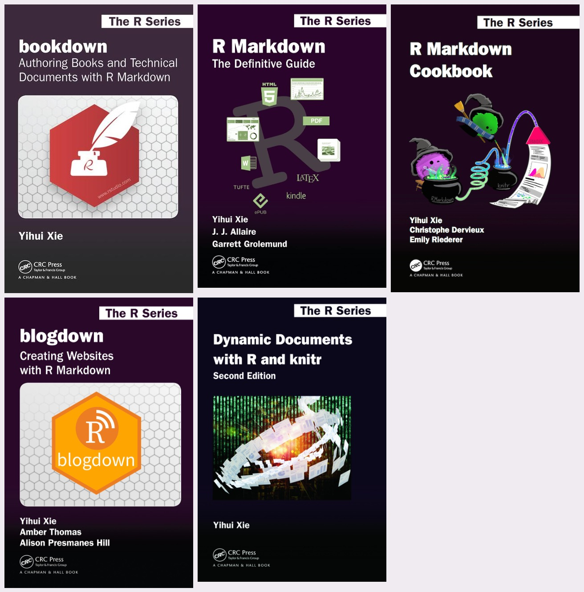

RMarkdown/Quarto Tips and Tricks
Keywords
r, rmarkdown, quarto, literate programming
This document provides a collection of my tweets containing tips and tricks related to RMarkdown, and its successor, Quarto. Although the document was originally meant for personal use, I’m hoping that others might also find it useful.
If you’re reading this on GitHub README, you can read the tweets on this webpage: https://indrajeetpatil.github.io/RmarkdownTips/
Tip
Source code for this document can be found on GitHub: https://github.com/IndrajeetPatil/RmarkdownTips
Ackowledgments
Most of these tips are from Yihui Xie’s books and I would highly recommend that you check them out. Except for the one about {knitr}, all other books are available online for free.

I would especially like to thank Christophe Dervieux, who has patiently answered my questions and queries on Twitter, GitHub, and StackOverflow. His kindness and patience is boundless, not to mention his knowledge of the markdown-universe.
Tweets with tips and tricks
Be patient
It might take a few seconds before the tweets are rendered on the webpage.
Apologies in advance for the delays.
Embed one chunk in another chunk
Reusing code chunks in #rmarkdown (using
— Indrajeet Patil (@patilindrajeets) July 9, 2021<<>>) is a really cool feature, esp. in teaching contexts! ♻️
You can introduce students to code components piece-by-piece without having to repeat yourself in the underlying document! 👩🏫
For more, see-https://t.co/Hup2mjd6dl#rstats pic.twitter.com/KCdEhs2ACv
Render R Markdown with rmarkdown::render()
Sometimes you may wish to render an #rmarkdown document from a code chunk of another document.
— Indrajeet Patil (@patilindrajeets) July 13, 2021
E.g., if you're writing a paper and want to render the supplementary info document from the main document.
Doing so is as simple as this 👇! 🙌
Ref. https://t.co/FDfAZ2q7WA#rstats pic.twitter.com/9In6J8dlNl
Child documents
Sometimes you want to:
— Indrajeet Patil (@patilindrajeets) July 8, 2021
♻️ reuse text (e.g. methods, session info) across documents
✂️ break a long document into smaller ones
In #rmarkdown, you can create a "child" document and insert its contents into a "parent" document! 👩👦https://t.co/QOtOxwwmbN
🎥 1-min demo👇#rstats pic.twitter.com/tMzF6HUuTb
ICYMI, instead of creating one long document, you can create reusable child RMarkdown or Quarto documents and stitch them together in single or multiple parent documents. 👨👦
— Indrajeet Patil (इंद्रजीत पाटील) (@patilindrajeets) November 22, 2022
What's more, you can also create child templates!
For more, see:https://t.co/QOtOxwwmbN#rstats pic.twitter.com/nhrlmGXhem
Opening linked documents in a new tab
ICYMI, you can use the
— Indrajeet Patil (इंद्रजीत पाटील) (@patilindrajeets) November 19, 2022targetattribute in Quarto or RMarkdown docs to specify where to open the linked document (e.g. should it open in the same or a new tab).
For available options for this attribute, see:https://t.co/E95CLiD3Og#rstats #quarto_pub pic.twitter.com/CT13aIWeBx
Line numbers for code blocks
If you want to, #rmarkdown provides a chunk option to easily add line numbers to source code and output text! 🧮
— Indrajeet Patil (@patilindrajeets) July 6, 2021
Ref: https://t.co/bM2oL6kpqt
N.B.
- You'll need to use syntax highlighting themetango.
- Although only HTML output is shown, it works for PDF as well.#rstats pic.twitter.com/8wKwA9uTwt
Knitting with Infinite Moon Reader
Maybe I was the only one who didn't know this for a long time, but you don't have to knit #rmarkdown document for a preview every time you make a change.
— Indrajeet Patil (@patilindrajeets) February 27, 2021
Just runxaringan::infinite_moon_reader()function, and the preview will change after saving the document! 🙌🕺#rstats pic.twitter.com/Tz3Y6hNGh3
Multi-column layout with Pandoc’s fenced div
Sometimes (especially in a teaching context or in a publication) you want to display text, code blocks, plots, etc. side-by-side for comparison.
— Indrajeet Patil (इंद्रजीत पाटील) (@patilindrajeets) July 23, 2022
In #rmarkdown, you can create a multi-column layout using Pandoc's fenced Div! 🍎🍏
For more, see:https://t.co/Ul7QWt3aOd#rstats pic.twitter.com/QPdGtnpK32
Side-by-side plots in code chunk
If you've got a code chunk in #rmarkdown that produces multiple plots, they will by default be shown sequentially.
— Indrajeet Patil (@patilindrajeets) May 11, 2021
But sometimes one may want them to be instead displayed side-by-side 👯
Below is a 1-min demo of how to do so 🙌
For more, see: https://t.co/KXLAuEXP78#rstats pic.twitter.com/cNBn4WnJWZ
Side-by-side tables in code chunk
If an #rmarkdown code chunk has multiple dataframes, they will be displayed one on top of another.
— Indrajeet Patil (@patilindrajeets) June 23, 2021
But what if we want them to be instead displayed side-by-side (maybe to compare them?) 👯
Here is a < 1-min demo of how to do so
For more, see: https://t.co/gUJZLfYxNR#rstats pic.twitter.com/xDHQB9lFjD
Skipping evaluation of specific lines of code
You know how you can turn off code evaluation for a chunk by setting
— Indrajeet Patil (@patilindrajeets) June 14, 2021eval=FALSEin #rmarkdown.
I was today years old when I realized that, if you have multiple lines of code, you can also selectively skip evaluation of only specific lines of code! 🤯#rstats pic.twitter.com/KbVSzoVRAX
Parametrized reports
If you have to create a report template that can be reused across multiple similar scenarios, #rmarkdown provides just the tool: Parameterized reports! 👏https://t.co/zuQ6H3y037
— Indrajeet Patil (@patilindrajeets) June 21, 2021
This is how you can generate hundreds of documents/reports with a single line of code! 🤯#rstats pic.twitter.com/PWyS10ATlV
Inline formatting
ICYMI, you can use {n+1} backticks (`) in #rmarkdown document to show literal code with {n} backticks. 💡
— Indrajeet Patil (@patilindrajeets) May 16, 2021
This is really useful when you want to print the code verbatim in instructive tutorials, talks, etc. 🧑🏫https://t.co/cNVZ8Zmq4A#rstats pic.twitter.com/t5cpXvCZwk
Using verbatim engine for teaching
The new {verbatim} engine in {knitr} 📦 is going to be an absolute game-changer for teaching #rmarkdown to newbies! 🤩https://t.co/Sn46mZDfFo#rstats pic.twitter.com/ZCLsM6iLX6
— Indrajeet Patil (इंद्रजीत पाटील) (@patilindrajeets) January 10, 2022
Custom CSS
If you know a bit of CSS, the sky is the limit for how much you can customize #rmarkdown outputs. 🌈
— Indrajeet Patil (@patilindrajeets) March 4, 2021
For example, this quick demo shows how I can write custom css to use my favorite font (Google's RobotoCondensed) for the text body. 🔤
For more:https://t.co/dS4jLSr1Rs#rstats pic.twitter.com/8XzSrGNeXO
Additional templates in other packages
Another reason why I ❤️ writing in #rmarkdown:
— Indrajeet Patil (@patilindrajeets) March 13, 2021
If you install a few additional packages, you can choose from a huge collection of ready-made templates! 👏
Doesn't matter if you are writing a journal article, CV, handout, etc.
One authoring framework to cover it all 💪#rstats pic.twitter.com/hOIHigWEP8
Tufte-style margin content
Sometimes while in #rmarkdown, I have content (code, equation, etc.) that isn't crucial for the main narrative but also interesting enough not to be included as a caption.
— Indrajeet Patil (@patilindrajeets) March 23, 2021
This is where Tufte-style's margin content comes to the rescue! 🌟
See:https://t.co/fUvD7NkYai#rstats pic.twitter.com/c6Lbz4MqDp
Multiple output formats
Although #rmarkdown creates all sorts of outputs, not everything will work across outputs. E.g. I love including gifs in docs. This works in HTML but fails when knitted to PDF.
— Indrajeet Patil (@patilindrajeets) May 20, 2021
✅ How can one make doc robust to multiple outputs?
See demo 📽️
Ref:https://t.co/A0fqXzpGnw#rstats pic.twitter.com/RbUUifhPdg
Changing graphical devices
Sometimes you may prefer a certain graphical device to render plots (e.g. PNG), but the journal or stakeholders might request different formats. 📸
— Indrajeet Patil (@patilindrajeets) May 27, 2021
📽️ shows how easy it is to produce plots for multiple devices at once using #rmarkdown docs! 🙌https://t.co/KXLAuEXP78#rstats pic.twitter.com/w0IBAyGZmJ
Additional arguments to graphical devices
Not only can you change the graphical device used in #rmarkdown via chunk options, but you can also provide additional arguments to the device itself! 🖼️https://t.co/KXLAuEXP78
— Indrajeet Patil (@patilindrajeets) June 17, 2021
Of course, arguments depend on:
output (HTML, PDF, etc.) and device (PNG, JPEG, etc.)#rstats pic.twitter.com/hBe8DG09XU
Include appendix after bibliography
If you write a manuscript in #rmarkdown, the references are included by default at the end of the article.
— Indrajeet Patil (@patilindrajeets) July 26, 2021
But what if you also wish to include appendices? 🤔
This demo 📽️ shows how you can force a position for a bibliography. 💡
For more, see:https://t.co/4kqTvNeOSh#rstats pic.twitter.com/IbDTHYcSBr
Confusion between eval, echo, include
At least once a month, I get confused about which of these {knitr} options I actually want to use 🙊
— Indrajeet Patil (@patilindrajeets) June 15, 2021
eval, echo, include.
So I finally made a quick table for myself. Maybe you’ll also find it useful. 📄
For more, see:https://t.co/QZwA6kWBB3
✅: yes, ❌: no#rstats #rmarkdown pic.twitter.com/Q795O3vVKq
Set the document title dynamically
One of the coolest things about #rmarkdown is that you can use #rstats code literally anywhere - even while specifying the metadata in YAML! 🤯
— Indrajeet Patil (@patilindrajeets) April 24, 2021
This means you can dynamically change the title (and other metadata) for the document 🪄
For more, see:https://t.co/8GAjY3lrN6 pic.twitter.com/VI6Nct5vDY
In-body syntax for chunk options
ICYMI, {knitr} 📦 now provides an alternate (and IMO more readable) way to specify code chunk options! 📑https://t.co/Sn46mZUR3Y
— Indrajeet Patil (इंद्रजीत पाटील) (@patilindrajeets) June 10, 2022
Chunk options written in the chunk header can be pretty hard to read, esp. when there are too many, or some are too long.#rstats #DataScience pic.twitter.com/kR0SUTd7XC
Option aliases
If you feel that you spend too much time typing (even with autocomplete) some oft-used {knitr} chunk options in #rmarkdown, you can use the {set_alias} function to create shorthands! 🙌https://t.co/94siAzrjAO
— Indrajeet Patil (@patilindrajeets) July 20, 2021
Here is a demo 📽️#rstats pic.twitter.com/6LPso8aeCN
Reducing size with {prettydoc}
For some reason, if you need to reduce the file size of #rmarkdown's HTML output, but also don't want to compromise on the simplicity and pleasantness afforded by the default HTML template, you can instead use
— Indrajeet Patil (@patilindrajeets) April 6, 2021prettydoc's HTML templates 🙌💅https://t.co/ONHY0Xdxt4#rstats pic.twitter.com/i2laRd0bMw
Cross-referencing with {bookdown}
One reason I prefer
— Indrajeet Patil (@patilindrajeets) March 16, 2021bookdown📦's wrapper functions: cross-referencing is easier!
In this little demo, I show how you can cross-reference figures if you switch fromrmarkdown::html_documenttobookdown::html_document2👏https://t.co/c6Mqyc33m2#rstats #rmarkdown pic.twitter.com/YuY40AWHxH
Preserving spaces
Also see Yihui’s much simpler solution in the thread
I was today years old when I figured out how to preserve spaces in #rmarkdown 🙈#rstats pic.twitter.com/vJkBHW1yUe
— Indrajeet Patil (@patilindrajeets) April 30, 2021
Using YAML pipe operator ( | )
If you need to use special characters while writing #rmarkdown YAML details, you can use the pipe operator ( | ) in YAML to avoid having to escape any characters! 🙌https://t.co/kRFkcRs2if#rstats pic.twitter.com/bTWFFgIdzg
— Indrajeet Patil (@patilindrajeets) August 11, 2021
Formatting/styling code
Please spare your colleagues or collaborators by properly formatting your #rmarkdown code to make it more pleasant to read. 💅
— Indrajeet Patil (@patilindrajeets) May 4, 2021
No excuses when doing so is as easy as this! 🙌
For more, see: https://t.co/YFREna5s2D#rstats pic.twitter.com/N5u6uNxi9y
Bootstrap themes
Sunday morning playing around with (bootstrap) themes for #rmarkdown's HTML output ☕️
— Indrajeet Patil (@patilindrajeets) May 9, 2021
Here is a complete list of available options 🎨https://t.co/HOT3533ace#rstats pic.twitter.com/2sYsyFWSUL
Description lists in HTML vignettes
AFAIK, it is not straightforward in #rmarkdown to create description lists (https://t.co/Ojb7IZjDBs) in plain HTML documents, but that shouldn't stop you from easily using them in HTML vignettes for packages! 🗒️#rstats pic.twitter.com/VO42Uq6NfC
— Indrajeet Patil (इंद्रजीत पाटील) (@patilindrajeets) November 8, 2021
Code highlighting styles
In case you missed it, you can choose from different code highlighting styles in #rmarkdown and don't need to always stick to the default one. 🎨
— Indrajeet Patil (@patilindrajeets) May 7, 2021
My favorites are "kate" and "espresso". What are yours? 💅#rstats pic.twitter.com/bmaq7672Zn
Shiny Documents
Static reports are the past; the future lies with dynamic, #shiny reports in #rmarkdown!
— Indrajeet Patil (@patilindrajeets) May 3, 2021
The reader (boss?, customer?, …) can change the parameters as they see fit and the analysis in the document will adjust immediately. 🪄
For more, see:https://t.co/4bhChsVoqu#rstats pic.twitter.com/wLZZ184vP4
Keyboard short-cut to split chunk
Here is a cool #rmarkdown short-cut that helps shave off some typing.
— Indrajeet Patil (@patilindrajeets) March 6, 2021
In case you have multiple outputs from the same code chunk, and then you decide to split that code into separate chunks, you can do so with a short-cut:
Windows: Ctrl + Alt + I
Mac: Cmd + Option + I#rstats pic.twitter.com/MkHHQ2Xygm
Interactive dashboards
I don't get to use the interactive dashboards often in my work and that's a real pity because they are so wicked COOL! 🤩https://t.co/VuFF96bMDu
— Indrajeet Patil (@patilindrajeets) March 25, 2021
And all it takes is changing the output parameter in #rmarkdown! As simple as that 😯#rstats pic.twitter.com/coU69aKDEl
Data frame printing
In case you missed it, you can specify
— Indrajeet Patil (@patilindrajeets) March 7, 2021df_printargument in #rmarkdown YAML to specify your preferred method for printing dataframes! 📄https://t.co/N9MPUzrj3Q
And, if you like none of these, there is always @haozhu233'skableExtra! 🤩https://t.co/8OReWQpDP2#rstats pic.twitter.com/Ru8OtYjirm
Xaringan to Quarto conversion
I've been converting some presentations made in {Xaringan} 📦 to #Quarto
— Indrajeet Patil (इंद्रजीत पाटील) (@patilindrajeets) August 15, 2022revealjsformat (https://t.co/2owbgU104G).
Although not everything has 1-to-1 mapping, I've tabulated a few recurring conversions; may be helpful in case others are doing similar conversions! 🔀#rstats pic.twitter.com/elVqMKmJul